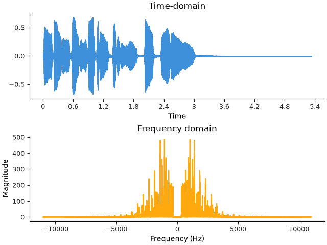
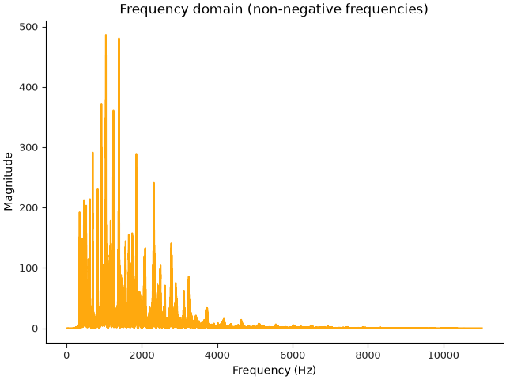
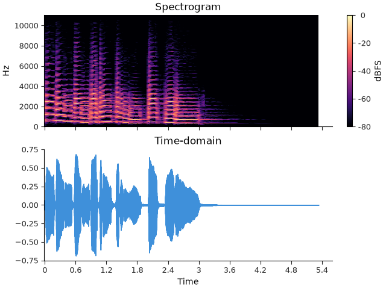

Note
Go to the end to download the full example code.
Frequency and time-frequency analysis#
This section demonstrates how to compute and visualize the frequency content of an audio signal, as well as how to compute a spectrogram for visualizing how frequency content changes over time.
Fourier analysis#
In the previous section, we saw how to load an audio signal and plot its waveform. This is a time-domain representation of the signal: we see how the air pressure (or voltage, in the case of an analog recording) changes over time. Another way to analyze the signal is to look at its frequency content. This is done by performing a Fourier transform, which decomposes the signal into a sum of sinusoids of different frequencies. Instead of representing the signal as a sequence of sample values over time, the Fourier transform represents it as a collection of sinusoids, each with a specific amplitude and phase offset, which combine to form the original signal.
The Discrete Fourier Transform (DFT) is computed by the Fast Fourier
Transform algorithm (FFT) implemented in numpy or scipy:
import numpy as np
import librosa
from IPython.display import HTML
y, sr = librosa.loadx("trumpet")
HTML(librosa.util.example_info("trumpet", html=True))
y_dft = np.fft.fft(y)
The result of the DFT is a complex-valued array of the same length as the input signal. The magnitude of the complex numbers gives the amplitude of the sinusoid at each frequency, and the angle gives the phase offset.
print("Time-domain shape: ", y.shape)
print("DFT shape: ", y_dft.shape)
print("DFT data type: ", y_dft.dtype)
Time-domain shape: (117601,)
DFT shape: (117601,)
DFT data type: complex64
As a general rule, the DFT will always produce the same number of frequencies as there are samples in the input signal. The frequencies measured by the DFT cover the range [-sr/2, +sr/2] Hz. We can plot the magnitude of the Fourier transform to show the frequency content of the signal. To plot this correctly, we will need to know which frequencies are used in the DFT calculation. This is provided by the np.fft.fftfreq function. This function takes the length of the DFT as an argument, and the sampling period (reciprocal of the sampling rate) to return an array of frequencies corresponding to the DFT output.
frequencies = np.fft.fftfreq(len(y), d=1 / sr)
We can now plot the magnitude of the Fourier transform against the frequencies to see what’s in the signal. We’ll plot the time-domain signal above the frequency plot for comparison.
import matplotlib.pyplot as plt
fig, ax = plt.subplots(nrows=2)
librosa.display.waveshow(y, sr=sr, ax=ax[0])
ax[0].set(title="Time-domain")
ax[1].plot(frequencies, np.abs(y_dft), color="C1")
ax[1].set(title="Frequency domain",
xlabel="Frequency (Hz)",
ylabel="Magnitude")

There are a few things to observe in the frequency domain plot:
The frequency range goes -11025 to +11025 Hz.
The plot is symmetric around 0 Hz.
There is no indication of where in the signal any particular frequencies occur: the magnitudes are aggregated across the entirety of the signal.
The idea of “negative frequency” can be confusing if you’re new to it. Without going into the technical details, it turns out that when the input signal is real-valued (as is the case for digital audio recordings), all of the necessary information to represent the signal is contained in the non-negative frequency range. This is why the frequency domain magnitude plot is horizontally symmetric.
When working with audio signals, it is common to only consider the non-negative frequencies, to the point that most FFT implementations provide simplified functions that only measure these frequencies. This is typically called rfft (real-input FFT). Do not be confused: the output of the rfft function is still complex-valued, but the negative-frequency components are not computed.
y_rfft = np.fft.rfft(y)
frequencies_rfft = np.fft.rfftfreq(len(y), d=1 / sr)
fig, ax = plt.subplots()
ax.plot(frequencies_rfft, np.abs(y_rfft), color="C1")
ax.set(title="Frequency domain (non-negative frequencies)",
xlabel="Frequency (Hz)",
ylabel="Magnitude")

The result of rfft has approximately half the number of frequencies as the full DFT, and the frequencies are all non-negative:
print("Full FFT shape: ", y_dft.shape)
print("Full FFT data type: ", y_dft.dtype)
print("RFFT shape: ", y_rfft.shape)
print("RFFT data type: ", y_rfft.dtype)
print("Frequencies: ", frequencies_rfft)
Full FFT shape: (117601,)
Full FFT data type: complex64
RFFT shape: (58801,)
RFFT data type: complex64
Frequencies: [ 0. 0.187 0.375 ... 11024.531 11024.719 11024.906]
Time-varying analysis#
The third point above is worth investigating further. For most interesting audio signals, the energy associated with each audible frequency is not fixed for all time. Instead, we expect the amplitude of a particular frequency to be high at some points (i.e. if there is a note at that frequency being sounded) and low at other times.
While it is true that the DFT encodes everything needed to represent and reconstruct a digital signal, that does not mean that the resulting representation is necessarily obvious or easy to directly interpret.
This is where the idea of a time-varying representation becomes useful. Rather than analyzing the entire signal in one shot, it is often useful to divide the signal up into short fragments (commonly denoted as frames) that can be analyzed independently. There are many ways to do this, but the most commonly used approach is called the short-time Fourier transform (STFT).
Librosa implements this by the function librosa.stft:
stft = librosa.stft(y)
The output of the librosa.stft function is now a two-dimensional array.
The first dimension corresponds to frequencies, while the second
dimension corresponds to frame indices.
print(stft.shape)
(1025, 230)
By default, librosa.stft uses a frame length of n_fft=2048 samples, and
a hop length of 512 samples. This means that each column of the
stft array corresponds to a 2048-sample window of the input signal,
and successive columns are offset by 512 samples. Measured in time
at the default sampling rate of 22050 Hz, this corresponds to a frame
length of 93 ms, and a hop length of 23 ms.
Each frame is then analyzed using the DFT (using np.fft.rfft), which results in
n_fft // 2 + 1 = 1025 frequencies.
The exact frequencies measured can be computed using the np.fft.rfftfreq function
as above, or also using the librosa.fft_frequencies function:
frequencies_stft = librosa.fft_frequencies(sr=sr, n_fft=2048)
print(frequencies_stft)
[ 0. 10.767 21.533 ... 11003.467 11014.233 11025. ]
As a general convention, the trailing dimensions of arrays in librosa
correspond to time (measured in either samples or frames).
This means that stft[:, t] is the frequency content of the signal
at frame t, while stft[f, :] is the time evolution of frequency
f.
To convert between frame indices and time, librosa provides the
librosa.frames_to_time function:
frame_times = librosa.frames_to_time(np.arange(stft.shape[1]), sr=sr, hop_length=512)
print(frame_times)
[0. 0.023 0.046 0.07 0.093 0.116 0.139 0.163 0.186 0.209 0.232 0.255
0.279 0.302 0.325 0.348 0.372 0.395 0.418 0.441 0.464 0.488 0.511 0.534
0.557 0.58 0.604 0.627 0.65 0.673 0.697 0.72 0.743 0.766 0.789 0.813
0.836 0.859 0.882 0.906 0.929 0.952 0.975 0.998 1.022 1.045 1.068 1.091
1.115 1.138 1.161 1.184 1.207 1.231 1.254 1.277 1.3 1.324 1.347 1.37
1.393 1.416 1.44 1.463 1.486 1.509 1.533 1.556 1.579 1.602 1.625 1.649
1.672 1.695 1.718 1.741 1.765 1.788 1.811 1.834 1.858 1.881 1.904 1.927
1.95 1.974 1.997 2.02 2.043 2.067 2.09 2.113 2.136 2.159 2.183 2.206
2.229 2.252 2.276 2.299 2.322 2.345 2.368 2.392 2.415 2.438 2.461 2.485
2.508 2.531 2.554 2.577 2.601 2.624 2.647 2.67 2.694 2.717 2.74 2.763
2.786 2.81 2.833 2.856 2.879 2.902 2.926 2.949 2.972 2.995 3.019 3.042
3.065 3.088 3.111 3.135 3.158 3.181 3.204 3.228 3.251 3.274 3.297 3.32
3.344 3.367 3.39 3.413 3.437 3.46 3.483 3.506 3.529 3.553 3.576 3.599
3.622 3.646 3.669 3.692 3.715 3.738 3.762 3.785 3.808 3.831 3.855 3.878
3.901 3.924 3.947 3.971 3.994 4.017 4.04 4.063 4.087 4.11 4.133 4.156
4.18 4.203 4.226 4.249 4.272 4.296 4.319 4.342 4.365 4.389 4.412 4.435
4.458 4.481 4.505 4.528 4.551 4.574 4.598 4.621 4.644 4.667 4.69 4.714
4.737 4.76 4.783 4.807 4.83 4.853 4.876 4.899 4.923 4.946 4.969 4.992
5.016 5.039 5.062 5.085 5.108 5.132 5.155 5.178 5.201 5.224 5.248 5.271
5.294 5.317]
The librosa.frames_to_time function can convert either a single number or an
array of numbers from units of frames to units of time, given the sampling
rate an hop length. The calculation above, which computes the time value for
each frame index in a given array, is so common that librosa provides a helper
function librosa.times_like to do this in one step:
frame_times = librosa.times_like(stft, sr=sr, hop_length=512)
print(frame_times)
[0. 0.023 0.046 0.07 0.093 0.116 0.139 0.163 0.186 0.209 0.232 0.255
0.279 0.302 0.325 0.348 0.372 0.395 0.418 0.441 0.464 0.488 0.511 0.534
0.557 0.58 0.604 0.627 0.65 0.673 0.697 0.72 0.743 0.766 0.789 0.813
0.836 0.859 0.882 0.906 0.929 0.952 0.975 0.998 1.022 1.045 1.068 1.091
1.115 1.138 1.161 1.184 1.207 1.231 1.254 1.277 1.3 1.324 1.347 1.37
1.393 1.416 1.44 1.463 1.486 1.509 1.533 1.556 1.579 1.602 1.625 1.649
1.672 1.695 1.718 1.741 1.765 1.788 1.811 1.834 1.858 1.881 1.904 1.927
1.95 1.974 1.997 2.02 2.043 2.067 2.09 2.113 2.136 2.159 2.183 2.206
2.229 2.252 2.276 2.299 2.322 2.345 2.368 2.392 2.415 2.438 2.461 2.485
2.508 2.531 2.554 2.577 2.601 2.624 2.647 2.67 2.694 2.717 2.74 2.763
2.786 2.81 2.833 2.856 2.879 2.902 2.926 2.949 2.972 2.995 3.019 3.042
3.065 3.088 3.111 3.135 3.158 3.181 3.204 3.228 3.251 3.274 3.297 3.32
3.344 3.367 3.39 3.413 3.437 3.46 3.483 3.506 3.529 3.553 3.576 3.599
3.622 3.646 3.669 3.692 3.715 3.738 3.762 3.785 3.808 3.831 3.855 3.878
3.901 3.924 3.947 3.971 3.994 4.017 4.04 4.063 4.087 4.11 4.133 4.156
4.18 4.203 4.226 4.249 4.272 4.296 4.319 4.342 4.365 4.389 4.412 4.435
4.458 4.481 4.505 4.528 4.551 4.574 4.598 4.621 4.644 4.667 4.69 4.714
4.737 4.76 4.783 4.807 4.83 4.853 4.876 4.899 4.923 4.946 4.969 4.992
5.016 5.039 5.062 5.085 5.108 5.132 5.155 5.178 5.201 5.224 5.248 5.271
5.294 5.317]
Spectrograms#
As we saw in the previous section, the audio data can be difficult to understand as a sequence of numbers, but it can be easier to understand when visualized. The same is true of time-frequency representations like stft. The most common way to visualize the time-frequency content of an audio signal is to plot the magnitude of the STFT as a 2D image, where the horizontal axis corresponds to time, the vertical axis corresponds to frequency, and the color of each pixel corresponds to the magnitude of the STFT at that time and frequency. This is called a spectrogram.
Librosa provides a function librosa.display.specshow to plot spectrograms.
Let’s plot the spectrogram of the trumpet signal we loaded earlier, along with
its waveform for comparison.
fig, ax = plt.subplots(nrows=2, sharex=True)
img = librosa.display.specshow(stft, vscale="dBFS",
sr=sr, hop_length=512, x_axis="time", y_axis="hz", ax=ax[0])
librosa.display.colorbar_db(img, label="dBFS")
ax[0].set(title="Spectrogram")
ax[0].label_outer()
librosa.display.waveshow(y, sr=sr, ax=ax[1])
ax[1].set(title="Time-domain")

Note
The vscale=’dBFS’ argument is used to scale the spectrogram’s colors to decibels relative to full scale (dBFS), meaning that all values are scaled relative to the maximum value in the spectrogram.
For context, the audio is embedded below. Listen to the example and try to follow along with the waveform and spectrogram plots above.
- A couple of things to note in this example:
Only the magnitude of the STFT is plotted. The phase information is typically not visualized. This is done by np.abs(stft), just like we did above when plotting the frequency content of the signal.
The magnitude is converted to decibels using the
librosa.amplitude_to_dbfunction, which makes the plot easier to interpret visually.
Unlike the waveform plot above, the spectrogram plot shows how the frequency content of the signal changes over time, corresponding to different notes being played on the trumpet. Importantly, even for a simple monophonic signal like this one, the spectrogram exposes a lot of complexity in the signal that is not obvious from the waveform, such has harmonic structure (energy at integer multiples of the fundamental frequency being sounded).
Summary#
In this section, we saw how to compute the Fourier transform of an audio signal to analyze its frequency content. We also saw how to compute a spectrogram to visualize how the frequency content of the signal changes over time.
Time-frequency representations like the STFT are central to much of the analysis tools provided by librosa, and are used in many of the examples in the following sections.
For more detail on how to visualize spectrogram data, see the Spectrograms section of the display tutorial.
Total running time of the script: (0 minutes 0.994 seconds)